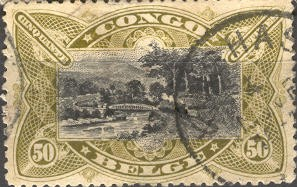
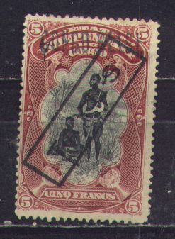
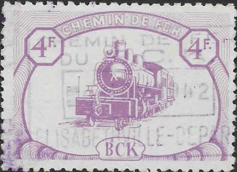

Return To Catalogue - Belgian Congo 1886-1893 - Belgian Congo 1894-1908 - Ruanda-Urundi
Note: on my website many of the
pictures can not be seen! They are of course present in the
catalogue;
contact me if you want to purchase it.
For previous issues of Belgian Congo, click here.

5 c green and black (harbor) 10 c red and black (Stanley falls) 15 c yellow and black (palm trees) 50 c olive and black (bridge)
Value of the stamps |
|||
vc = very common c = common * = not so common ** = uncommon |
*** = very uncommon R = rare RR = very rare RRR = extremely rare |
||
| Value | Unused | Used | Remarks |
| 5 c | c | c | |
| 10 c | c | c | |
| 15 c | ** | ** | |
| 50 c | * | * | |
Inscription "CONGO BELGE BELGISCH CONGO" (1910)
5 c green and black (harbor)
5 c green and black (harbor,
'cinq' added in top of design
10 c red and black (Stanley falls)
10 c red and black (Stanley falls),
'dix' added in top of design
15 c yellow and black (palm trees)
15 c green and black (palm trees)
25 c blue and black (Inkissi falls)
25 c blue and black (Inkissi falls),
'vingt-cinq' added in top of design
40 c green and black (canoes)
40 c red and black (canoes)
50 c olive and black (bridge)
50 c brown and black (bridge)
1 F red and black (elephant hunting)
1 F olive and black (elephant hunting)
3 F red and black (village)
5 F red and black (native people)
5 F orange and black (native people)
10 F green and black (steamship)
Value of the stamps |
|||
vc = very common c = common * = not so common ** = uncommon |
*** = very uncommon R = rare RR = very rare RRR = extremely rare |
||
| Value | Unused | Used | Remarks |
| 5 c | * | c | |
| 5 c | c | * | 1916, 'cinq' added on top |
| 10 c | c | c | |
| 10 c | c | c | 1916, 'dix' added on top |
| 15 c yellow and black | c | c | |
| 15 c green and black | c | c | 1916 |
| 25 c | c | c | |
| 25 c | c | c | 1916, 'vingt-cinq' added on top |
| 40 c green and black | * | * | |
| 40 c red and black | * | * | 1916 |
| 50 c olive and black | * | * | |
| 50 c brown and black | * | * | 1916 |
| 1 F red and black | * | * | |
| 1 F olive and black | c | c | 1916 |
| 3 F | ** | ** | |
| 5 F red and black | *** | *** | |
| 5 F orange and black | * | * | 1916 |
| 10 F | *** | *** | |
Surcharged (1921-1922)

5 c on 40 c green and black (red overprint) 5 c on 50 c brown and black 10 c on 5 c green and black (3 types, red overprint) 10 c on 1 F olive and black (red overprint) 15 c on 50 c olive and black (red overprint) 25 c on 15 c yellow and black (red overprint) 25 c on 40 c red and black (red overprint, other type with black overprint) 25 c on 5 F orange and black 30 c on 10 c red and black (2 types) 50 c on 25 c blue and black (2 types, red overprint) Doubly surcharged (1922-1923) 25 c on 30 c on 10 c red and black (2 types) With overprint '1921'

1 F red and black 3 F red and black 5 F red and black 10 F green and black (red overprint) Red Cross issue (1918), with red cross and surcharged
Reduced size
5 c + 10 c green and black (harbor) 10 c + 15 c red and black (Stanley falls) 15 c + 20 c green and black (palm trees) 25 c + 25 c blue and black (Inkissi falls) 40 c + 40 c red and black (canoes) 50 c + 50 c brown and black (bridge) 1 Fr + 1 Fr olive and black (elephant hunting) 5 Fr + 5 Fr orange and black (native people) 10 Fr + 10 Fr green and black (steamship)
Imperforate red cross stamps are remainders. These issue overprinted 'A.O.' was used in Ruanda-Urundi.
Value of the stamps |
|||
vc = very common c = common * = not so common ** = uncommon |
*** = very uncommon R = rare RR = very rare RRR = extremely rare |
||
| Value | Unused | Used | Remarks |
| 5 c + 10 c | c | c | |
| 10 c + 15 c | c | c | |
| 15 c + 20 c | c | c | |
| 25 c + 25 c | c | c | |
| 40 c + 40 c | * | * | |
| 50 c + 50 c | * | * | |
| 1 F + 1 F | ** | ** | |
| 5 F + 5 F | *** | *** | |
| 10 F + 10 F | R | R | |
1925 Inscription "KOLONIALE VELDTOCHTEN 1914-1918" or "CAMPAGNES COLONIALES 1914-1918"

Canoe, these stamps exist with overprint "RUANDA-URUNDI"
25 c + 25 c red and black
I have seen postal stationery in this design:
'Etat Independant du Congo Carte Postale', 15 c orange (palm
tree, no black center)
'Congo Belge Belgisch Congo Carte Postale Postkaart ', 10 c red
(palm tree, no black center)
Other values might exist.
The unsurcharged stamps:
1) Chemically changed 5 c green and black into 5 c blue and black
are known to exist (however, the shade will never be the same as
a genuine 5 c blue and black). The 10 c red and black also exists
with chemically changed colour (into 10 c brown and black).
2) Stamps with cut off perforation exist pretending to be an
imperforate stamp
3) Forged 10 c blue and black and 10 F green and black with
inversed centre exist, by shaving two halfs of normal stamps and
than pasting them back together again.
4) Be careful with removed pen-cancels (pretending to be unused
stamps)
5) Bogus overprints '15' or '30' (intended to be used on
postcards only) on 5 c green and black or 10 c red and black.
Source: http://users.skynet.be/chst/falsification.htm
(What is this? bogus overprint '15 c' in red on 50 c olive and
black)
Forgeries of the "CONGO BELGE" overprint also exist.
Some primitive forgeries of the 1894 "ETAT INDEPENDANT DU CONGO" stamps:

A stamp with a "Kigoma" overprint to be used for "Ruanda-Urundi", however this overprint
is considered to be of non-official character.
5 c orange (Ubangi warrior)
10 c green (Baluba girl)
15 c brown (Babuende girl)
20 c olive (Ubangi man)
20 c green (weaving, 1925?)
25 c brown (making mands, 'Vannerie Mandewerk')
30 c red (wood carving, 'Bois Houtwerk')
30 c olive (1925?)
35 c green (1927, wood carving, 'Bois Houtwerk')
40 c violet (1925?)
45 c violet (cattle 'Elevage Veefokkerij', 1927)
50 c blue (hunting with bow and arrow, 'Jacht Chasse')
50 c brown (1925?)
60 c red (cattle 'Elevage Veefokkerij')
75 c orange (weaving, 'Weven Tisser')
75 c blue
75 c red (wood carving, 'Bois Houtwerk')
1 F brown ('Orner Sieren')
1 F blue (1925?)
1 F red (1927)
1.25 F blue (1927)
1.50 F blue (1927)
1.75 F blue (1927)
3 F brown (rubber winning, 'Caouchoue')
5 F grey (palm oil, 'Huile de palme Palmolie')
10 F black (elephant head, 'Ivoor Ivoire')
Surcharged
'40 c' (red) on 35 c green (1930?)
'50 c' (red) on 45 c violet (1930?)
1.75 F on 1.50 F blue (1927)
'2' (red) on 1.75 F blue (1930?)
'3F25' (red) on 3 F brown (1932)
These stamps exist with overprint "RUANDA-URUNDI"

5 c black 10 c violet 20 c red 35 c green 40 c brown 60 c brown 1 F red 1.60 F blue 1.75 F blue 2 F brown 2.75 F violet 3.50 F red 5 F black 10 F violet 20 F lilac Surcharged (1930-1931) '40 c' (red) on 35 c green '1F25' (blue) on 1 F red '2 F' (red) on 1.60 F blue '2 F' (red) on 1.75 F blue '3F25' on 2.75 F violet '3F25' on 3.50 F red
10 c + 5 c red (nurse) 20 c + 10 c brown (nurse) 35 c + 15 c green (doctor with tent) 60 c + 30 c lilac (view of hospital) 1 F + 50 c red (doctor talking to a mother) 1.75 F + 75 c blue (hospital scene) 3.50 F + 1.50 F red (baby care) 5 F + 2.50 F brown (operation room) 10 F + 5 F black (school)

Identical flower issues for Ruanda-Urundi and Belgian Congo.
The stamps with 'overprint' "TAXES" are actually cancels, example:

The following stamps of Belgium with overprints '4 ----- C. CONGO 4 ------ C.', 'Congo 2 c 2 c' and 'Congo 3 c 3 c' are probably bogus issues:

I know of some bogus(?) labels issued in 1884 with inscription 'ASSOCIATION INTERNATIONALE SERVICE POSTAL DU CONGO Inland' or 'ASSOCIATION INTERNATIONALE SERVICE POSTAL DU HAUT CONGO Inland.' in a large rectangle (information obtained thanks to Baudoin Collard). I have never seen these labels personally.
(Sorry, no picture available yet)
50 c red and black 1 F violet and black 2 F blue and black 5 F green and black
Value of the stamps |
|||
vc = very common c = common * = not so common ** = uncommon |
*** = very uncommon R = rare RR = very rare RRR = extremely rare |
||
| Value | Unused | Used | Remarks |
| 50 c | c | c | |
| 1 F | c | c | |
| 2 F | c | c | |
| 5 F | * | * | |
15 F brown and black (aeroplane above native village) 30 F lilac and black (aeroplane above people carrying goods)
5 c brown 10 c red 15 c lilac 30 c green 50 c blue (shades) 1 F grey
Here with overprint "RUANDA-URUNDI"

I've seen several stamps with the image of a train, "CHEMIN DE FER" on top and "BCK" at the bottom. They were issued for the 'Compagnie du chemin de fer de Bas-Congo au Katanga'. This company was founded in 1906.
A nice site on the forgeries of this country can be found on : http://users.skynet.be/chst/falsification.htm (in french).


{kind=link}